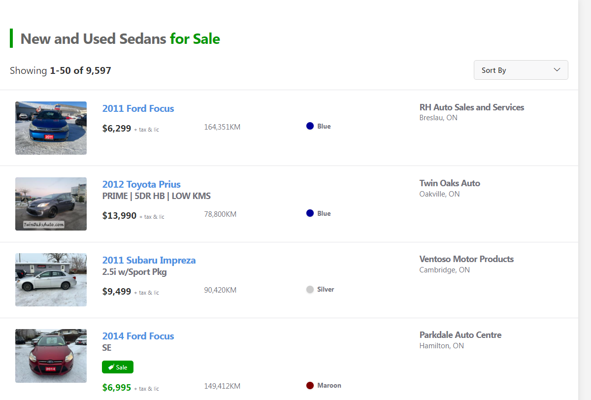

Vehicle Web Scraper
A simple webscraper project that takes car listing data from canadian used car websites. Click on the image to learn more!
In a previous project, I created a webscraper that scrapres car listing data from used car websites. However since most car listing websites are fairly difficult to moderate users may often list a listing that could be considered "undesirable". So what do I mean by an undesirable car listing? Usually for me a listing is undresirable if it has a thumbnail that doesn't accurately portray the vehicle that we wish to buy.

Looking at the above image, I would consider this one that would be undesirable as it doesn't actually show the vehicle in question. This is undesirable as most used car buyers want to have a look of the actual used car so they can make a detailed analysis. It always helps to have a thumbnail that accurately portrays the vehicle as it can help us filter out damaged or undesirable vehicles when searching for a used car. I dislike the above use of the thumbnail as it requires more work for me as the buyer as I have to reach out to the dealer to figure out if the vehicle is good or bad.
Using work from my other project we can import the scraper directly, one thing we do need to create is a script that will take the thumbnail links and save the images to a .jpg and .png file.
To create the thumbnail filter I will do so by using a neural network classifier to distinguish between thumbnail images that are satisfactory or unsatisfactory. I will try my hand at creating my own neural network classifier and compare it to some popular prebuilt models.
A simple way of understanding a CNN classifier is it's composed of two parts, a convolutional base and a dense head.

The above diagram can help us understand how a CNN classifier would work. First an image is sent into the convolutional base that is broken down into multiple features that are relevant to our object in question. After the physical features are extracted a dense head would then classify the object based on the obtained features.
The below image can help us understand how a convulational base works with respect to classification of the model of a car. the convulational base would be able to obtain the physical features such as the window, chassis, bumper and wheel of the car. The dense head would then obtain these segments of the vehicle and recognize that the following features likely correspond to a "VW BUG" and would thus select that as a viable choice.

The weights that a Conv net learns during traning are typically contained within its convolutional layer. The weights are typically referred to as kernels and can be represented as an array of values:

This image would represent a 3x3 kernel with each pixel corresponding to a different weight value. The kernel would then be used to sweep through the image to obtain an activation map which helps us filter out the desired features in our image.

This image illustrates the process very well. The 3x3 kernel sweeps through a fraction of the 5x5 input image and assigns it a new value corresponding to the "purple" pixel on the output image. If the kernel is effective the output image's pixels will highlight the desired desired features we wish to see.
Here's an image of a BMW, lets see what it would look like if we applied a filter to it.

One filter I want to try is known as "Edge-Dectect" a 3x3 example looks like this:

It can be implemented with the following code.
import tensorflow as tf
kernel = tf.constant([
[-1, -1, -1],
[-1, 8, -1],
[-1, -1, -1],
])
plt.figure(figsize=(3, 3))
show_kernel(kernel)Applying it to our image it follows its name and we can see that it filters out the image of the BMW.

In the previous step we applied some filtering and detection, the next step is to apply what is known as condensing and pooling. This step is important from a computational perspective as often times when a feature is filtered we often carry some "dead space" which is useless and redundant data. Let's look at an example:

In this image we essentially pool up the values in a 2x2 block and map it into a smaller image. Although we lose some information computationally it helps as we lose a lot of the black space.
Now that we have covered the background needed to create a convNet, let's build one. I will consider a fairly simple case in which I wish to filter out images that have tarps within them like the following:

The code for creating the convNet is fairly simple.
from tensorflow.keras.models import Sequential
from tensorflow.keras.layers import Conv2D, MaxPooling2D, Dense, Flatten, Dropout
from tensorflow.keras.preprocessing.image import ImageDataGenerator
from tensorflow.keras.preprocessing import image
model = Sequential()
# The First Convolutional Block
model.add(Conv2D(128, (5,5), 1, activation='relu', input_shape=(256, 256, 3)))
model.add(MaxPooling2D())
# The Second Convolutional Block
model.add(Conv2D(64, (3,3), 1, activation='relu', input_shape=(256, 256, 3)))
model.add(MaxPooling2D())
# The Third Convulational Block
model.add(Conv2D(32, (3,3), 1, activation='relu', input_shape=(256, 256, 3)))
model.add(MaxPooling2D())
# Classifier Head
model.add(Flatten())
model.add(Dense(256, activation='relu'))
model.add(Dense(1, activation='sigmoid'))
model.compile(optimizer='adam',loss=tf.losses.BinaryCrossentropy(), metrics=['accuracy'])
model.summary()Finally lets fit the model to the data and analyze the model accuracy and the loss.


Let us look at a more visual example of the filter in action.

A simple webscraper project that takes car listing data from canadian used car websites. Click on the image to learn more!

A simple project that classifies whether a car listing has an "acceptable thumbnail". Click on the image to learn more!

A chatbot written in python which responds to the offensiveness of a users message in text channel. Click on the image to learn more!
If you have any questions or are interested in reaching out for any opportunities send me an email at the address below.